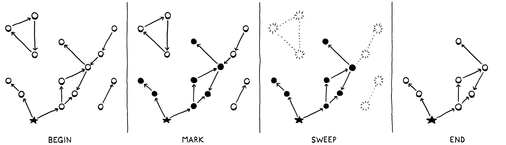
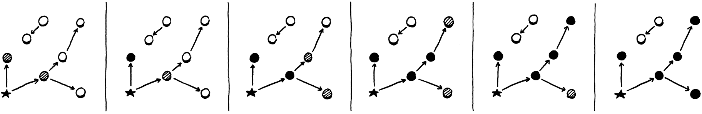
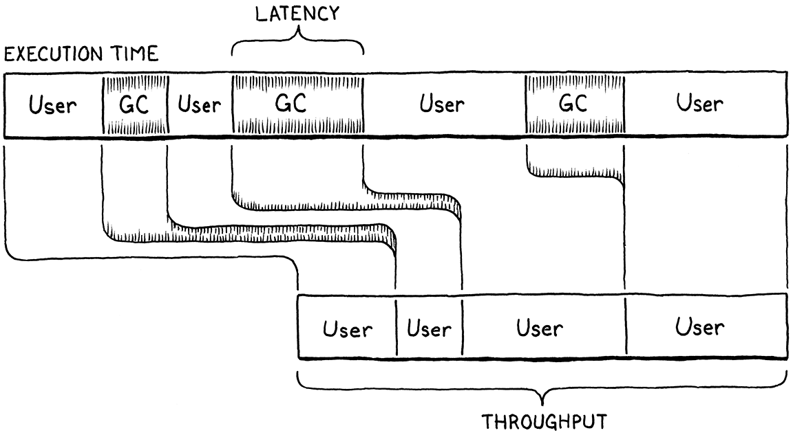

Garbage Collection
This book is a work in progress!
×If you see a mistake, find something unclear, or have a suggestion, please let me know. To follow its progress, please join the mailing list:
(I post about once a month. Don’t worry, I won’t spam you.)
I wanna, I wanna,
I wanna, I wanna,
I wanna be trash.The Whip, “Trash”
We say Lox is a “high-level” language because it frees programmers from worrying about details irrelevant to the problem they’re solving. The user becomes an executive, giving the machine abstract goals and letting the lowly computer figure out how to get there.
Dynamic memory allocation is a perfect candidate for automation. It’s necessary for a working program, tedious to do by hand, and yet still error-prone. The inevitable mistakes can be catastrophic, leading to crashes, memory corruption, or security violations. It’s the kind of risky-yet-boring work that machines excel at over humans.
This is why Lox is a managed language, which means that the language implementation manages memory allocation and freeing on the user’s behalf. When a user performs an operation that requires some dynamic memory, the VM automatically allocates it. The programmer never worries about deallocating anything. The machine ensures any memory the program is using sticks around as long as needed.
Lox provides the illusion that the computer has an infinite amount of memory. Users can allocate and allocate and allocate and never once think about where all these bytes are coming from. Of course, computers do not yet have infinite memory. So the way managed languages maintain this illusion is by going behind the programmer’s back and reclaiming memory that the program no longer needs. The component that does this is called a garbage collector.
26 . 0 . 1Reachability
This raises a surprisingly difficult question: how does a VM tell what memory is not needed? Memory is only needed if it is read in the future, but short of having a time machine, how can an implementation tell what code the program will execute and which data it will use? Spoiler alert: VMs cannot travel into the future. Instead, the language makes a conservative approximation: it considers a piece of memory to still be in use if it could possibly be read in the future.
That sounds too conservative. Couldn’t any bit of memory potentially be read? Actually, no, at least not in a memory-safe language like Lox. Here’s an example:
var a = "first value"; a = "updated"; // GC here. print a;
Say we run the GC after the assignment has completed on the second line. The
string “first value” is still sitting in memory, but there is no way for the
user’s program to ever get to it. Once a got reassigned, the program lost any
reference to that string. We can safely free it. A value is reachable if
there is some way for a user program to reference it, otherwise, like the string
“first value” here, it is unreachable.
Many values can be directly accessed by the VM. Take a look at:
var global = "string"; { var local = "another"; print global + local; }
Pause the program right after the two strings have been concatenated but before
the print statement has executed. The VM can reach "string" by looking
through the global variable table and finding the entry for global. It can
find "another" by walking the value stack and hitting the slot for the local
variable local. It can even find the concatenated string "stringanother"
since that temporary value is also sitting on the VM’s stack at the point when
we paused our program.
All of these values are called roots. A root is any object that the VM can reach directly without going through a reference in some other object. Most roots are global variables or on the stack, but as we’ll see, there are a couple of other places the VM stores references to objects that it can find.
Other values can be found by going through a reference inside another value. Fields on instances of classes are the most obvious case, but we don’t have those yet. Even without those, our VM still has indirect references. Consider:
fun makeClosure() { var a = "data"; fun f() { print a; } return f; } { var closure = makeClosure(); // GC here. closure(); }
Say we pause the program on the marked line and run the garbage collector. When
the collector is done and the program resumes, it will call the closure, which
will in turn print "data". So the collector needs to not free that string.
But here’s what the stack looks like when we pause the program:
The "data" string is nowhere on it. It has already been hoisted off the stack
and moved into the closed upvalue that the closure uses. The closure itself is
on the stack. But to get to the string, we need to trace through the closure and
its upvalue array. Since it is possible for the user’s program to do that, all
of these indirectly accessible objects are also considered reachable.
This gives us an inductive definition of reachability:
-
All roots are reachable.
-
Any object referred to from a reachable object is itself reachable.
These are the values that are still “live” and need to stay in memory. Any value that doesn’t meet this definition is fair game for the collector to reap. That recursive pair of rules hints at a recursive algorithm we can use to free up unneeded memory:
-
Starting with the roots, traverse through object references to find the full set of reachable objects.
-
Free all objects not in that set.
Many different garbage collection algorithms are in use today, but they all roughly follow that same structure. Some may interleave the steps or mix them, but the two fundamental operations are there. They mostly differ in how they perform each step.
26 . 1Mark-Sweep Garbage Collection
The first managed language was Lisp, the second “high-level” language to be invented, right after Fortran. John McCarthy considered using manual memory management or reference counting, but eventually settled on (and coined) garbage collection—once the program was out of memory, it would go back and find unused storage it could reclaim.
He designed the very first, simplest garbage collection algorithm, called mark-and-sweep or just mark-sweep. Its description fits in three short paragraphs in the initial paper on Lisp. Despite its age and simplicity, the same fundamental algorithm underlies many modern memory managers. Some corners of CS seem to be timeless.
As the name implies, mark-sweep works in two phases:
-
Marking: We start with the roots and traverse or trace through all of the objects those roots refer to. This is a classic graph traversal of all of the reachable objects. Each time we visit an object, we mark it in some way. (Implementations differ in how they record the mark.)
-
Sweeping: Once the mark phase completes, every reachable object in the heap has been marked. That means any unmarked object is unreachable and ripe for reclamation. We go through all the unmarked objects and free each one.
It looks something like this:
That’s what we’re gonna implement. Whenever we decide it’s time to reclaim some bytes, we’ll trace everything and mark all the reachable objects, free what didn’t get marked, and then resume the user’s program.
26 . 1 . 1Collecting garbage
This entire chapter is about implementing this one function:
void* reallocate(void* pointer, size_t oldSize, size_t newSize);
add after reallocate()
void collectGarbage();
void freeObjects();
We’ll work our way up to a full implementation starting with this empty shell:
add after freeObject()
void collectGarbage() { }
The first question you might ask is, When does this function get called? It turns out that’s a subtle question that we’ll spend some time on later in the chapter. For now we’ll sidestep the issue and build ourselves a handy diagnostic tool in the process.
#define DEBUG_TRACE_EXECUTION
#define DEBUG_STRESS_GC
#define UINT8_COUNT (UINT8_MAX + 1)
We’ll add an optional “stress test” mode for the garbage collector. When this flag is defined, the GC runs as often as it possibly can. This is, obviously, horrendous for performance. But it’s great for flushing out memory management bugs that occur only when a GC is triggered at just the right moment. If every moment triggers a GC, you’re likely to find those bugs.
void* reallocate(void* pointer, size_t oldSize, size_t newSize) {
in reallocate()
if (newSize > oldSize) { #ifdef DEBUG_STRESS_GC collectGarbage(); #endif }
if (newSize == 0) {
Whenever we call reallocate() to acquire more memory, we force a collection to
run. The if check is because reallocate() is also called to free or shrink an
allocation. We don’t want to trigger a GC for that—in particular because the
GC itself will call reallocate() to free memory.
Collecting right before allocation is the classic way to wire a GC into a VM. You’re already calling into the memory manager, so it’s an easy place to hook in the code. Also, allocation is the only time when you really need some freed up memory so that you can reuse it. If you don’t use allocation to trigger a GC, you have to make sure every possible place in code where you can loop and allocate memory also has a way to trigger the collector. Otherwise, the VM can get into a starved state where it needs more memory but never collects any.
26 . 1 . 2Debug logging
While we’re on the subject of diagnostics, let’s put some more in. A real challenge I’ve found with garbage collectors is that they are opaque. We’ve been running lots of Lox programs just fine without any GC at all so far. Once we add one, how do we tell if it’s doing anything useful? Can we tell only if we write programs that plow through acres of memory? How do we debug that?
An easy way to shine a light into the GC’s inner workings is with some logging.
#define DEBUG_STRESS_GC
#define DEBUG_LOG_GC
#define UINT8_COUNT (UINT8_MAX + 1)
When this is enabled, clox prints information to the console when it does something with dynamic memory.
We need a couple of includes.
#include "vm.h"
#ifdef DEBUG_LOG_GC #include <stdio.h> #include "debug.h" #endif
void* reallocate(void* pointer, size_t oldSize, size_t newSize) {
We don’t have a collector yet, but we can start putting in some of the logging now. We’ll want to know when a collection run starts.
void collectGarbage() {
in collectGarbage()
#ifdef DEBUG_LOG_GC printf("-- gc begin\n"); #endif
}
void freeObjects() {
Eventually we will log some other operations during the collection, so we’ll also want to know when the show’s over.
printf("-- gc begin\n");
#endif
in collectGarbage()
#ifdef DEBUG_LOG_GC printf("-- gc end\n"); #endif
}
We don’t have any code for the collector yet, but we do have functions for allocating and freeing, so we can instrument those now.
vm.objects = object;
in allocateObject()
#ifdef DEBUG_LOG_GC printf("%p allocate %zu for %d\n", (void*)object, size, type); #endif
return object;
And at the end of an object’s lifespan:
static void freeObject(Obj* object) {
in freeObject()
#ifdef DEBUG_LOG_GC printf("%p free type %d\n", (void*)object, object->type); #endif
switch (object->type) {
With these two flags, we should be able to see that we’re making progress as we work through the rest of the chapter.
26 . 2Marking the Roots
Objects are scattered across the heap like stars in the inky night sky. A reference from one object to another forms a connection, and these constellations are the graph that the mark phase traverses. Marking begins at the roots.
#ifdef DEBUG_LOG_GC
printf("-- gc begin\n");
#endif
in collectGarbage()
markRoots();
#ifdef DEBUG_LOG_GC
Most roots are local variables or temporaries sitting right in the VM’s stack, so we start by walking that.
add after freeObject()
static void markRoots() { for (Value* slot = vm.stack; slot < vm.stackTop; slot++) { markValue(*slot); } }
To mark a Lox value, we use this new function:
void* reallocate(void* pointer, size_t oldSize, size_t newSize);
add after reallocate()
void markValue(Value value);
void collectGarbage();
Its implementation is here:
add after reallocate()
void markValue(Value value) { if (!IS_OBJ(value)) return; markObject(AS_OBJ(value)); }
Some Lox values—numbers, Booleans, and nil—are stored directly inline in
Value and require no heap allocation. The garbage collector doesn’t need to
worry about them at all, so the first thing we do is ensure that the value is an
actual heap object. If so, the real work happens in this function:
void* reallocate(void* pointer, size_t oldSize, size_t newSize);
add after reallocate()
void markObject(Obj* object);
void markValue(Value value);
Which is defined here:
add after reallocate()
void markObject(Obj* object) { if (object == NULL) return; object->isMarked = true; }
The NULL check is unnecessary when called from markValue(). A Lox Value that
is some kind of Obj type will always have a valid pointer. But later we will
call this function directly from other code, and in some of those places, the
object being pointed to is optional.
Assuming we do have a valid object, we mark it by setting a flag. That new field lives in the Obj header struct all objects share.
ObjType type;
in struct Obj
bool isMarked;
struct Obj* next;
Every new object begins life unmarked because we haven’t yet determined if it is reachable or not.
object->type = type;
in allocateObject()
object->isMarked = false;
object->next = vm.objects;
Before we go any farther, let’s add some logging to markObject().
void markObject(Obj* object) {
if (object == NULL) return;
in markObject()
#ifdef DEBUG_LOG_GC printf("%p mark ", (void*)object); printValue(OBJ_VAL(object)); printf("\n"); #endif
object->isMarked = true;
This way we can see what the mark phase is doing. Marking the stack takes care of local variables and temporaries. The other main source of roots are the global variables.
markValue(*slot);
}
in markRoots()
markTable(&vm.globals);
}
Those live in a hash table owned by the VM, so we’ll declare another helper function for marking all of the objects in a table.
ObjString* tableFindString(Table* table, const char* chars,
int length, uint32_t hash);
add after tableFindString()
void markTable(Table* table);
#endif
We implement that in the “table” module here:
add after tableFindString()
void markTable(Table* table) { for (int i = 0; i < table->capacity; i++) { Entry* entry = &table->entries[i]; markObject((Obj*)entry->key); markValue(entry->value); } }
Pretty straightforward. We walk the entry array. For each one, we mark its value. We also mark the key strings for each entry since the GC manages those strings too.
26 . 2 . 1Less obvious roots
Those cover the roots that we typically think of—the values that are obviously reachable because they’re stored in variables the user’s program can see. But the VM has a few of its own hidey-holes where it squirrels away references to values that it directly accesses.
Most function call state lives in the value stack, but the VM maintains a separate stack of CallFrames. Each CallFrame contains a pointer to the closure being called. The VM uses those pointers to access constants and upvalues, so those closures need to be kept around too.
}
in markRoots()
for (int i = 0; i < vm.frameCount; i++) { markObject((Obj*)vm.frames[i].closure); }
markTable(&vm.globals);
Speaking of upvalues, the open upvalue list is another set of values that the VM can directly reach.
for (int i = 0; i < vm.frameCount; i++) {
markObject((Obj*)vm.frames[i].closure);
}
in markRoots()
for (ObjUpvalue* upvalue = vm.openUpvalues; upvalue != NULL; upvalue = upvalue->next) { markObject((Obj*)upvalue); }
markTable(&vm.globals);
Remember also that a collection can begin during any allocation. Those allocations don’t just happen while the user’s program is running. The compiler itself periodically grabs memory from the heap for literals and the constant table. If the GC runs while we’re in the middle of compiling, then any values the compiler directly accesses need to be treated as roots too.
To keep the compiler module cleanly separated from the rest of the VM, we’ll do that in a separate function.
markTable(&vm.globals);
in markRoots()
markCompilerRoots();
}
It’s declared here:
ObjFunction* compile(const char* source);
add after compile()
void markCompilerRoots();
#endif
Which means the “memory” module needs an include.
#include <stdlib.h>
#include "compiler.h"
#include "memory.h"
And the definition is over in the “compiler” module.
add after compile()
void markCompilerRoots() { Compiler* compiler = current; while (compiler != NULL) { markObject((Obj*)compiler->function); compiler = compiler->enclosing; } }
Fortunately, the compiler doesn’t have too many values that it hangs on to. The only object it uses is the ObjFunction it is compiling into. Since function declarations can nest, the compiler has a linked list of those and we walk the whole list.
Since the “compiler” module is calling markObject(), it also needs an include.
#include "compiler.h"
#include "memory.h"
#include "scanner.h"
Those are all the roots. After running this, every object that the VM—runtime and compiler—can get to without going through some other object has its mark bit set.
26 . 3Tracing Object References
The next step in the marking process is tracing through the graph of references between objects to find the indirectly reachable values. We don’t have instances with fields yet, so there aren’t many objects that contain references, but we do have some. In particular, ObjClosure has the list of ObjUpvalues it closes over as well as a reference to the raw ObjFunction that it wraps. ObjFunction, in turn, has a constant table containing references to all of the literals created in the function’s body. This is enough to build a fairly complex web of objects for our collector to crawl through.
Now it’s time to implement that traversal. We can go breadth-first, depth-first, or in some other order. Since we just need to find the set of all reachable objects, the order we visit them mostly doesn’t matter.
26 . 3 . 1The tricolor abstraction
As the collector wanders through the graph of objects, we need to make sure it doesn’t lose track of where it is or get stuck going in circles. This is particularly a concern for advanced implementations like incremental GCs that interleave marking with running pieces of the user’s program. The collector needs to be able to pause and then pick up where it left off later.
To help us soft-brained humans reason about this complex process, VM hackers came up with a metaphor called the tricolor abstraction. Each object has a conceptual “color” that tracks what state the object is in, and what work is left to do.
-
White: At the beginning of a garbage collection, every object is white. This color means we have not reached or processed the object at all.
-
Gray: During marking, when we first reach an object, we darken it gray. This color means we know the object itself is reachable and should not be collected. But we have not yet traced through it to see what other objects it references. In graph algorithm terms, this is the worklist—the set of objects we know about but haven’t processed yet.
-
Black: When we take a gray object and mark all of the objects it references, we then turn the gray object black. This color means the mark phase is done processing that object.
In terms of that abstraction, the marking process now looks like this:
-
Start off with all objects white.
-
Find all the roots and mark them gray.
-
Repeat as long as there are still gray objects:
-
Pick a gray object. Turn any white objects that the object mentions to gray.
-
Mark the original gray object black.
-
I find it helps to visualize this. You have a web of objects with references between them. Initially, they are all little white dots. Off to the side are some incoming edges from the VM that point to the roots. Those roots turn gray. Then each gray object’s siblings turn gray while the object itself turns black. The full effect is a gray wavefront that passes through the graph, leaving a field of reachable black objects behind it. Unreachable objects are not touched by the wavefront and stay white.
At the end, you’re left with a sea of reached, black objects sprinkled with islands of white objects that can be swept up and freed. Once the unreachable objects are freed, the remaining objects—all black—are reset to white for the next garbage collection cycle.
26 . 3 . 2A worklist for gray objects
In our implementation we have already marked the roots. They’re all gray. The next step is to start picking them and traversing their references. But we don’t have any easy way to find them. We set a field on the object, but that’s it. We don’t want to have to traverse the entire object list looking for objects with that field set.
Instead, we’ll create a separate worklist to keep track of all of the gray objects. When an object turns gray, in addition to setting the mark field we’ll also add it to the worklist.
object->isMarked = true;
in markObject()
if (vm.grayCapacity < vm.grayCount + 1) { vm.grayCapacity = GROW_CAPACITY(vm.grayCapacity); vm.grayStack = (Obj**)realloc(vm.grayStack, sizeof(Obj*) * vm.grayCapacity); } vm.grayStack[vm.grayCount++] = object;
}
We could use any kind of data structure that lets us put items in and take them
out easily. I picked a stack because that’s the simplest to implement with a
dynamic array in C. It works mostly like other dynamic arrays we’ve built in
Lox, except, note that it calls the system realloc() function and not our
own reallocate() wrapper. The memory for the gray stack itself is not
managed by the garbage collector. We don’t want growing the gray stack during a
GC to cause the GC to recursively start a new GC. That could tear a hole in the
space-time continuum.
We’ll manage its memory ourselves, explicitly. The VM owns the gray stack.
Obj* objects;
in struct VM
int grayCount; int grayCapacity; Obj** grayStack;
} VM;
It starts out empty.
vm.objects = NULL;
in initVM()
vm.grayCount = 0; vm.grayCapacity = 0; vm.grayStack = NULL;
initTable(&vm.globals);
And we need to free it when the VM shuts down.
object = next;
}
in freeObjects()
free(vm.grayStack);
}
We take full responsibility for this array. That includes allocation failure. If we can’t create or grow the gray stack, then we can’t finish the garbage collection. This is bad news for the VM, but fortunately rare since the gray stack tends to be pretty small. It would be nice to do something more graceful, but to keep the code in this book simple, we just abort.
vm.grayStack = (Obj**)realloc(vm.grayStack,
sizeof(Obj*) * vm.grayCapacity);
in markObject()
if (vm.grayStack == NULL) exit(1);
}
26 . 3 . 3Processing gray objects
OK, now when we’re done marking the roots, we have both set a bunch of fields and filled our work list with objects to chew through. It’s time for the next phase.
markRoots();
in collectGarbage()
traceReferences();
#ifdef DEBUG_LOG_GC
Here’s the implementation:
add after markRoots()
static void traceReferences() { while (vm.grayCount > 0) { Obj* object = vm.grayStack[--vm.grayCount]; blackenObject(object); } }
It’s as close to that textual algorithm as you can get. Until the stack empties, we keep pulling out gray objects, traversing their references, and then marking them black. Traversing an object’s references may turn up new white objects that get marked gray and added to the stack. So this function swings back and forth between turning white objects gray and gray objects black, gradually advancing the entire wavefront forward.
Here’s where we traverse a single object’s references:
add after markValue()
static void blackenObject(Obj* object) { switch (object->type) { case OBJ_NATIVE: case OBJ_STRING: break; } }
Each object kind has different fields that might reference other objects, so we need a specific blob of code for each type. We start with the easy ones—strings and native function objects contain no outgoing references so there is nothing to traverse.
Note that we don’t set any state in the traversed object itself. There is no
direct encoding of “black” in the object’s state. A black object is any object
whose isMarked field is set and that is no longer in
the gray stack.
Now let’s start adding in the other object types. The simplest is upvalues.
static void blackenObject(Obj* object) {
switch (object->type) {
in blackenObject()
case OBJ_UPVALUE:
markValue(((ObjUpvalue*)object)->closed);
break;
case OBJ_NATIVE:
When an upvalue is closed, it contains a reference to the closed-over value. Since the value is no longer on the stack, we need to make sure we trace the reference to it from the upvalue.
Next are functions.
switch (object->type) {
in blackenObject()
case OBJ_FUNCTION: {
ObjFunction* function = (ObjFunction*)object;
markObject((Obj*)function->name);
markArray(&function->chunk.constants);
break;
}
case OBJ_UPVALUE:
Each function has a reference to an ObjString containing the function’s name. More importantly, the function has a constant table packed full of references to other objects. We trace all of those using this helper:
add after markValue()
static void markArray(ValueArray* array) { for (int i = 0; i < array->count; i++) { markValue(array->values[i]); } }
The last object type we have now—we’ll add more in later chapters—is closures.
switch (object->type) {
in blackenObject()
case OBJ_CLOSURE: {
ObjClosure* closure = (ObjClosure*)object;
markObject((Obj*)closure->function);
for (int i = 0; i < closure->upvalueCount; i++) {
markObject((Obj*)closure->upvalues[i]);
}
break;
}
case OBJ_FUNCTION: {
Each closure has a reference to the bare function it wraps, as well as an array of pointers to the upvalues it captures. We trace all of those.
That’s the basic mechanism for processing a gray object, but there are two loose ends to tie up. First, some logging.
static void blackenObject(Obj* object) {
in blackenObject()
#ifdef DEBUG_LOG_GC printf("%p blacken ", (void*)object); printValue(OBJ_VAL(object)); printf("\n"); #endif
switch (object->type) {
This way, we can watch the tracing percolate through the object graph. Speaking of which, note that I said graph. References between objects are directed, but that doesn’t mean they’re acyclic! It’s entirely possible to have cycles of objects. When that happens, we need to ensure our collector doesn’t get stuck in an infinite loop as it continually re-adds the same series of objects to the gray stack.
The fix is easy.
if (object == NULL) return;
in markObject()
if (object->isMarked) return;
#ifdef DEBUG_LOG_GC
If the object is already marked, we don’t mark it again and thus don’t add it to the gray stack. This ensures that an already-gray object is not redundantly added and that a black object is not inadvertently turned back to gray. In other words, it keeps the wavefront moving forward through only the white objects.
26 . 4Sweeping Unused Objects
When the loop in traceReferences() exits, we have processed all the objects we
could get our hands on. The gray stack is empty, and every object in the heap is
either black or white. The black objects are reachable, and we want to hang on to
them. Anything still white never got touched by the trace and is thus garbage.
All that’s left is to reclaim them.
traceReferences();
in collectGarbage()
sweep();
#ifdef DEBUG_LOG_GC
All of the logic lives in one function.
add after traceReferences()
static void sweep() { Obj* previous = NULL; Obj* object = vm.objects; while (object != NULL) { if (object->isMarked) { previous = object; object = object->next; } else { Obj* unreached = object; object = object->next; if (previous != NULL) { previous->next = object; } else { vm.objects = object; } freeObject(unreached); } } }
I know that’s kind of a lot of code and pointer shenanigans, but there isn’t
much to it once you work through it. The outer while loop walks the linked
list of every object in the heap, checking their mark bits. If an object is
marked (black), we leave it alone and continue past it. If it is unmarked
(white), we unlink it from the list and free it using the freeObject()
function we already wrote.
Most of the other code in here deals with the fact that removing a node from a singly linked list is cumbersome. We have to continuously remember the previous node so we can unlink its next pointer, and we have to handle the edge case where we are freeing the first node. But, otherwise, it’s pretty simple—delete every node in a linked list that doesn’t have a bit set in it.
There’s one little addition:
if (object->isMarked) {
in sweep()
object->isMarked = false;
previous = object;
After sweep() completes, the only remaining objects are the live black ones
with their mark bits set. That’s correct, but when the next collection cycle
starts, we need every object to be white. So whenever we reach a black object,
we go ahead and clear the bit now in anticipation of the next run.
26 . 4 . 1Weak references and the string pool
We are almost done collecting. There is one remaining corner of the VM that has some unusual requirements around memory. Recall that when we added strings to clox we made the VM intern them all. That means the VM has a hash table containing a pointer to every single string in the heap. The VM uses this to de-duplicate strings.
During the mark phase, we deliberately did not treat the VM’s string table as a source of roots. If we had, no string would ever be collected. The string table would grow and grow and never yield a single byte of memory back to the operating system. That would be bad.
At the same time, if we do let the GC free strings, then the VM’s string table will be left with dangling pointers to freed memory. That would be even worse.
The string table is special and we need special support for it. In particular, it needs a special kind of reference. The table should be able to refer to a string, but that link should not be considered a root when determining reachability. That implies that the referenced object can be freed. When that happens, the dangling reference must be fixed too, sort of like a magic, self-clearing pointer. This particular set of semantics comes up frequently enough that it has a name: a weak reference.
We have already implicitly implemented half of the string table’s unique behavior by virtue of the fact that we don’t traverse it during marking. That means it doesn’t force strings to be reachable. The remaining piece is clearing out any dangling pointers for strings that are freed.
To remove references to unreachable strings, we need to know which strings are unreachable. We don’t know that until after the mark phase has completed. But we can’t wait until after the sweep phase is done because by then the objects—and their mark bits—are no longer around to check. So the right time is exactly between the marking and sweeping phases.
traceReferences();
in collectGarbage()
tableRemoveWhite(&vm.strings);
sweep();
The logic for removing the about-to-be-deleted strings exists in a new function in the “table” module.
ObjString* tableFindString(Table* table, const char* chars,
int length, uint32_t hash);
add after tableFindString()
void tableRemoveWhite(Table* table);
void markTable(Table* table);
The implementation is here:
add after tableFindString()
void tableRemoveWhite(Table* table) { for (int i = 0; i < table->capacity; i++) { Entry* entry = &table->entries[i]; if (entry->key != NULL && !entry->key->obj.isMarked) { tableDelete(table, entry->key); } } }
We walk every entry in the table. The string intern table uses only the key of each entry—it’s basically a hash set not a hash map. If the key string object’s mark bit is not set, then it is a white object that is moments from being swept away. We delete it from the hash table first and thus ensure we won’t see any dangling pointers.
26 . 5When to Collect
We have a fully functioning mark-sweep garbage collector now. When the stress testing flag is enabled, it gets called all the time, and with the logging enabled too, we can watch it do its thing and see that it is indeed reclaiming memory. But, when the stress testing flag is off, it never runs at all. It’s time to decide when the collector should be invoked during normal program execution.
As far as I can tell, this question is poorly answered by the literature. When garbage collectors were first invented, computers had a tiny, fixed amount of memory. Many of the early GC papers assumed that you set aside a few thousand words of memory—in other words, most of it—and invoked the collector whenever you ran out. Simple.
Modern machines have gigs of physical RAM, hidden behind the operating system’s even larger virtual memory abstraction, which is shared among a slew of other programs all fighting for their chunk of memory. The operating system will let your program request as much as it wants and then page in and out from the disc when physical memory gets full. You never really “run out” of memory, you just get slower and slower.
26 . 5 . 1Latency and throughput
It no longer makes sense to wait until you “have to”, to run the GC, so we need a more subtle timing strategy. To reason about this more precisely, it’s time to introduce two fundamental numbers used when measuring a memory manager’s performance: throughput and latency.
Every managed language pays a performance price compared to explicit, user-authored deallocation. The time spent actually freeing memory is the same, but the GC spends cycles figuring out which memory to free. That is time not spent running the user’s code and doing useful work. In our implementation, that’s the entirety of the mark phase. The goal of a sophisticated garbage collector is to minimize that overhead.
There are two key metrics we can use to understand that cost better:
-
Throughput is the total fraction of time spent running user code versus doing garbage collection work. Say you run a clox program for ten seconds and it spends a second of that inside
collectGarbage(). That means the throughput is 90%—it spent 90% of the time running the program and 10% on GC overhead.Throughput is the most fundamental measure because it tracks the total cost of collection overhead. All else being equal, you want to maximize throughput. Up until this chapter, clox had no GC at all and thus 100% throughput. That’s pretty hard to beat. Of course, it came at the slight expense of potentially running out of memory and crashing if the user’s program ran long enough. You can look at the goal of a GC as fixing that “glitch” while sacrificing as little throughput as possible.
-
Latency is the longest continuous chunk of time where the user’s program is completely paused while garbage collection happens. It’s a measure of how “chunky” the collector is. Latency is an entirely different metric than throughput.
Consider two runs of a clox program that both take ten seconds. In the first run, the GC kicks in once and spends a solid second in
collectGarbage()in one massive collection. In the second run, the GC gets invoked five times, each for a fifth of a second. The total amount of time spent collecting is still a second, so the throughput is 90% in both cases. But in the second run, the latency is only 1/5th of a second, five times less than in the first.

If you like analogies, imagine your program is a bakery selling fresh-baked bread to customers. Throughput is the total number of warm, crusty baguettes you can serve to customers in a single day. Latency is how long the unluckiest customer has to wait in line before they get served.
Running the garbage collector is like shutting down the bakery temporarily to go through all of the dishes, sort out the dirty from the clean, and then wash the used ones. In our analogy, we don’t have dedicated dishwashers, so while this is going on, no baking is happening. The baker is washing up.
Selling fewer loaves of bread a day is bad, and making any particular customer sit and wait while you clean all the dishes is too. The goal is to maximize throughput and minimize latency, but there is no free lunch, even inside a bakery. Garbage collectors make different trade-offs between how much throughput they sacrifice and latency they tolerate.
Being able to make these trade-offs is useful because different user programs have different needs. An overnight batch job that is generating a report from a terabyte of data just needs to get as much work done as fast as possible. Throughput is queen. Meanwhile, an app running on a user’s smartphone needs to always respond immediately to user input so that dragging on the screen feels buttery smooth. The app can’t freeze for a few seconds while the GC mucks around in the heap.
As a garbage collector author, you control some of the trade-off between throughput and latency by your choice of collection algorithm. But even within a single algorithm, we have a lot of control over how frequently the collector runs.
Our collector is a stop-the-world GC which means the user’s program is paused until the entire garbage collection process has completed. If we wait a long time before we run the collector, then a large number of dead objects will accumulate. That leads to a very long pause while the collector runs, and thus high latency. So, clearly, we want to run the collector really frequently.
But every time the collector runs, it spends some time visiting live objects. That doesn’t really do anything useful (aside from ensuring that they don’t incorrectly get deleted). Time visiting live objects is time not freeing memory and also time not running user code. If you run the GC really frequently, then the user’s program doesn’t have enough time to even generate new garbage for the VM to collect. The VM will spend all of its time obsessively revisiting the same set of live objects over and over, and throughput will suffer. So, clearly, we want to run the collector really infrequently.
In fact, we want something in the middle, and the frequency of when the collector runs is one of our main knobs for tuning the trade-off between latency and throughput.
26 . 5 . 2Self-adjusting heap
We want our GC to run frequently enough to minimize latency but infrequently enough to maintain decent throughput. But how do we find the balance between these when we have no idea how much memory the user’s program needs and how often it allocates? We could pawn the problem onto the user and force them to pick by exposing GC tuning parameters. Many VMs do this. But if we, the GC authors, don’t know how to tune it well, odds are good most users won’t either. They deserve a reasonable default behavior.
I’ll be honest with you, this is not my area of expertise. I’ve talked to a number of professional GC hackers—this is something you can build an entire career on—and read a lot of the literature, and all of the answers I got were . . . vague. The strategy I ended up picking is common, pretty simple, and (I hope!) good enough for most uses.
The idea is that the collector frequency automatically adjusts based on the live size of the heap. We track the total number of bytes of managed memory that the VM has allocated. When it goes above some threshold, we trigger a GC. After that, we note how many bytes of memory remain—how many were not freed. Then we adjust the threshold to some value larger than that.
The result is that as the amount of live memory increases, we collect less frequently in order to avoid sacrificing throughput by re-traversing the growing pile of live objects. As the amount of live memory goes down, we collect more frequently so that we don’t lose too much latency by waiting too long.
The implementation requires two new bookkeeping fields in the VM.
ObjUpvalue* openUpvalues;
in struct VM
size_t bytesAllocated; size_t nextGC;
Obj* objects;
The first is a running total of the number of bytes of managed memory the VM has allocated. The second is the threshold that triggers the next collection. We initialize them when the VM starts up.
vm.objects = NULL;
in initVM()
vm.bytesAllocated = 0; vm.nextGC = 1024 * 1024;
vm.grayCount = 0;
The starting threshold here is arbitrary. It’s similar to the initial capacity we picked for our various dynamic arrays. The goal is to not trigger the first few GCs too quickly but also to not wait too long. If we had some real-world Lox programs, we could profile those to tune this. But since all we have are toy programs, I just picked a number.
Every time we allocate or free some memory, we adjust the counter by that delta.
void* reallocate(void* pointer, size_t oldSize, size_t newSize) {
in reallocate()
vm.bytesAllocated += newSize - oldSize;
if (newSize > oldSize) {
When the total crosses the limit, we run the collector.
if (newSize > oldSize) {
#ifdef DEBUG_STRESS_GC
collectGarbage();
#endif
in reallocate()
if (vm.bytesAllocated > vm.nextGC) {
collectGarbage();
}
}
Now, finally, our garbage collector actually does something when the user runs a
program without our hidden diagnostic flag enabled. The sweep phase frees
objects by calling reallocate(), which lowers the value of bytesAllocated,
so after the collection completes, we know how many live bytes remain. We adjust
the threshold of the next GC based on that.
sweep();
in collectGarbage()
vm.nextGC = vm.bytesAllocated * GC_HEAP_GROW_FACTOR;
#ifdef DEBUG_LOG_GC
The threshold is a multiple of the heap size. This way, as the amount of memory the program uses grows, the threshold moves farther out to limit the total time spent re-traversing the larger live set. Like other numbers in this chapter, the scaling factor is basically arbitrary.
#endif
#define GC_HEAP_GROW_FACTOR 2
void* reallocate(void* pointer, size_t oldSize, size_t newSize) {
You’d want to tune this in your implementation once you had some real programs to benchmark it on. Right now, we can at least log some of the statistics that we have. We capture the heap size before the collection.
printf("-- gc begin\n");
in collectGarbage()
size_t before = vm.bytesAllocated;
#endif
And then print the results at the end.
printf("-- gc end\n");
in collectGarbage()
printf(" collected %zu bytes (from %zu to %zu) next at %zu\n", before - vm.bytesAllocated, before, vm.bytesAllocated, vm.nextGC);
#endif
This way we can see how much the garbage collector accomplished while it ran.
26 . 6Garbage Collection Bugs
In theory, we are all done now. We have a GC. It kicks in periodically, collects what it can, and leaves the rest. If this were a typical textbook, we would wipe the dust from our hands and bask in the soft glow of the flawless marble edifice we have created.
But I aim to teach you not just the theory of programming languages but the sometimes painful reality. I am going to roll over a rotten log and show you the nasty bugs that live under it, and garbage collector bugs really are some of the grossest invertebrates out there.
The collector’s job is to free dead objects and preserve live ones. Mistakes are easy to make in both directions. If the VM fails to free objects that aren’t needed, it slowly leaks memory. If it frees an object that is in use, the user’s program can access invalid memory. These failures often don’t immediately cause a crash, which makes it hard for us to trace backward in time to find the bug.
This is made harder by the fact that we don’t know when the collector will run. Any call that eventually allocates some memory is a place in the VM where a collection could happen. It’s like musical chairs. At any point, the GC might stop the music. Every single heap-allocated object that we want to keep needs to find a chair quickly—get marked as a root or stored as a reference in some other object—before the sweep phase comes to kick it out of the game.
How is it possible for the VM to use an object later—one that the GC itself doesn’t see? How can the VM find it? The most common answer is through a pointer stored in some local variable on the C stack. The GC walks the VM’s value and CallFrame stacks, but the C stack is hidden to it.
In previous chapters, we wrote seemingly pointless code that pushed an object onto the VM’s value stack, did a little work, and then popped it right back off. Most times, I said this was for the GC’s benefit. Now you see why. The code between pushing and popping potentially allocates memory and thus can trigger a GC. We had to make sure the object was on the value stack so that the collector’s mark phase would find it and keep it alive.
I wrote the entire clox implementation before splitting it into chapters and writing the prose, so I had plenty of time to find all of these corners and flush out most of these bugs. The stress testing code we put in at the beginning of this chapter and a pretty good test suite were very helpful.
But I fixed only most of them. I left a couple in because I want to give you a hint of what it’s like to encounter these bugs in the wild. If you enable the stress test flag and run some toy Lox programs, you can probably stumble onto a few. Give it a try and see if you can fix any yourself.
26 . 6 . 1Adding to the constant table
You are very likely to hit the first bug. The constant table each chunk owns is a dynamic array. When the compiler adds a new constant to the current function’s table, that array may need to grow. The constant itself may also be some heap-allocated object like a string or a nested function.
The new object being added to the constant table is passed to addConstant().
At that moment, the object can be found only in the parameter to that function
on the C stack. That function appends the object to the constant table. If the
table doesn’t have enough capacity and needs to grow, it calls reallocate().
That in turn triggers a GC, which fails to mark the new constant object and
thus sweeps it right before we have a chance to add it to the table. Crash.
The fix, as you’ve seen in other places, is to push the constant onto the stack temporarily.
int addConstant(Chunk* chunk, Value value) {
in addConstant()
push(value);
writeValueArray(&chunk->constants, value);
Once the constant table contains the object, we pop it off the stack.
writeValueArray(&chunk->constants, value);
in addConstant()
pop();
return chunk->constants.count - 1;
When the GC is marking roots, it walks the chain of compilers and marks each of their functions, so the new constant is reachable now. We do need an include to call into the VM from the “chunk” module.
#include "memory.h"
#include "vm.h"
void initChunk(Chunk* chunk) {
26 . 6 . 2Interning strings
Here’s another similar one. All strings are interned in clox, so whenever we create a new string, we also add it to the intern table. You can see where this is going. Since the string is brand new, it isn’t reachable anywhere. And resizing the string pool can trigger a collection. Again, we go ahead and stash the string on the stack first.
string->hash = hash;
in allocateString()
push(OBJ_VAL(string));
tableSet(&vm.strings, string, NIL_VAL);
And then pop it back off once it’s safely nestled in the table.
tableSet(&vm.strings, string, NIL_VAL);
in allocateString()
pop();
return string;
This ensures the string is safe while the table is being resized. Once it
survives that, allocateString() will return it to some caller which can then
take responsibility for ensuring the string is still reachable before the next
heap allocation occurs.
26 . 6 . 3Concatenating strings
One last example: Over in the interpreter, the OP_ADD instruction can be used
to concatenate two strings. As it does with numbers, it pops the two operands
from the stack, computes the result, and pushes that new value back onto the
stack. For numbers that’s perfectly safe.
But concatenating two strings requires allocating a new character array on the heap, which can in turn trigger a GC. Since we’ve already popped the operand strings by that point, they can potentially be missed by the mark phase and get swept away. Instead of popping them off the stack eagerly, we peek them.
static void concatenate() {
in concatenate()
replace 2 lines
ObjString* b = AS_STRING(peek(0)); ObjString* a = AS_STRING(peek(1));
int length = a->length + b->length;
That way, they are still hanging out on the stack when we create the result string. Once that’s done, we can safely pop them off and replace them with the result.
ObjString* result = takeString(chars, length);
in concatenate()
pop(); pop();
push(OBJ_VAL(result));
Those were all pretty easy, especially because I showed you where the fix was. In practice, finding them is the hard part. All you see is an object that should be there but isn’t. It’s not like other bugs where you’re looking for the code that causes some problem. You’re looking for the absence of code which fails to prevent a problem, and that’s a much harder search.
But, for now at least, you can rest easy. As far as I know, we’ve found all of the collection bugs in clox, and now we have a working, robust, self-tuning, mark-sweep garbage collector.
Challenges
-
The Obj header struct at the top of each object now has three fields:
type,isMarked, andnext. How much memory do those take up (on your machine)? Can you come up with something more compact? Is there a runtime cost to doing so? -
When the sweep phase traverses a live object, it clears the
isMarkedfield to prepare it for the next collection cycle. Can you come up with a more efficient approach? -
Mark-sweep is only one of a variety of garbage collection algorithms out there. Explore those by replacing or augmenting the current collector with another one. Good candidates to consider are reference counting, Cheney’s algorithm, or the Lisp 2 mark-compact algorithm.
Design Note: Generational Collectors
A collector loses throughput if it spends a long time re-visiting objects that are still alive. But it can increase latency if it avoids collecting and accumulates a large pile of garbage to wade through. If only there were some way to tell which objects were likely to be long-lived and which weren’t. Then the GC could avoid revisiting the long-lived ones as often and clean up the ephemeral ones more frequently.
It turns out there kind of is. Many years ago, GC researchers gathered metrics on the lifetime of objects in real-world running programs. They tracked every object when it was allocated, and eventually when it was no longer needed, and then graphed out how long objects tended to live.
They discovered something they called the generational hypothesis, or the much less tactful term infant mortality. Their observation was that most objects are very short-lived but once they survive beyond a certain age, they tend to stick around quite a long time. The longer an object has lived, the longer it likely will continue to live. This observation is powerful because it gave them a handle on how to partition objects into groups that benefit from frequent collections and those that don’t.
They designed a technique called generational garbage collection. It works like this: Every time a new object is allocated, it goes into a special, relatively small region of the heap called the “nursery”. Since objects tend to die young, the garbage collector is invoked frequently over the objects just in this region.
Each time the GC runs over the nursery is called a “generation”. Any objects that are no longer needed get freed. Those that survive are now considered one generation older, and the GC tracks this for each object. If an object survives a certain number of generations—often just a single collection—it gets tenured. At this point, it is copied out of the nursery into a much larger heap region for long-lived objects. The garbage collector runs over that region too, but much less frequently since odds are good that most of those objects will still be alive.
Generational collectors are a beautiful marriage of empirical data—the observation that object lifetimes are not evenly distributed—and clever algorithm design that takes advantage of that fact. They’re also conceptually quite simple. You can think of one as just two separately tuned GCs and a pretty simple policy for moving objects from one to the other.